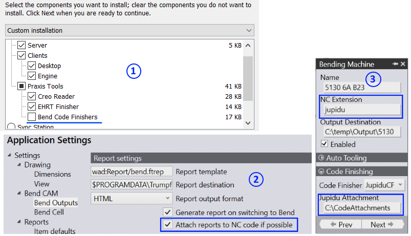
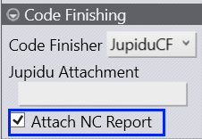

The jupidu attachment has been implemented as a bend code finisher.

The code-finisher expects the Jupidu Attachment folder as parameter. Praxis passes this as an argument when calling up this tool to finish the jupidu code. The tool looks-up the folder for an attachment with same name as the part. And attaches to the Jupidu code if found one. The supported attachments types are: pdf, stl, png, jpg, bmp, gif, tiff and txt. Other file types are ignored.
Check the Attached NC Report code-finisher option to attach the setup sheet report inside the jupidu file.
